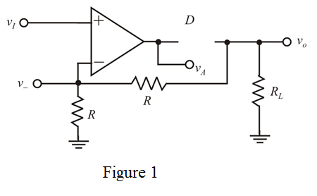
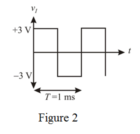
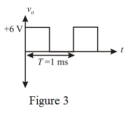

(a)
Refer to Figure P4.83 in the text book.
The input voltage is,
The input is positive, so the op amp output is at positive saturation level. Thus, the diode conducts.
By the virtual ground concept,
Therefore, the value of  is .
is .
(a)
Refer to Figure P4.83 in the text book.
The input voltage is,
The input is positive, so the op amp output is at positive saturation level. Thus, the diode conducts.
By the virtual ground concept,
Therefore, the value of is .
The current flowing through the resistor  is,
is,
The current flowing through the operational amplifier is zero, so same current flows through the feedback resistor.
Substitute 1 V for.

Therefore, the output voltage  is .
is .
Write the expression for the output voltage.
Substitute 2 V for  .
.
Therefore, the value of is .
(b)
The input is,
The input is positive, so the op amp output is at positive saturation level. Thus, the diode conducts.

By the virtual ground concept,
Therefore, the voltage,  is .
is .
The current flowing through the resistor  is,
is,
The current flowing through the operational amplifier is zero, so same current flows through the feedback resistor.
Substitute for .
Substitute 2 V for .
.
Therefore, the output voltage  is .
is .
Substitute 4 V for .
Therefore, the voltage  is
is  .
.
(c)
The input is,
The input is negative, so the op amp output is at negative saturation level. Thus the diode is in cut-off region.
Therefore, the voltage  is .
is .
Draw the following circuit diagram when the diode in cut-off.

From Figure 1, observe that the output voltage of the circuit is zero.
Therefore, the output is,
.
The op amp is operating in open loop, the voltage at inverting terminal is
Therefore, the voltage  is .
is .
(d)
The input is
The input is negative, so the op amp output is negative saturation level, thus the diode is cut-off.

Therefore, the value of is .
From Figure 1, it is clear that the output voltage of the circuit is zero.
Therefore, the output voltage is  .
.
When the op amp is operating in open loop condition, the voltage at inverting terminal is
Therefore, the voltage  is
is  .
.
Draw the symmetrical square wave of frequency,  amplitude and zero average voltage.
amplitude and zero average voltage.

The input is positive, so the op amp output is at positive saturation level. Thus, the diode conducts.

By the virtual ground concept,
The current flowing through the resistor  is,
is,
The current flowing through the operational amplifier is zero, so same current flows through the feedback.
Substitute 3 V for  .
.
Consider the input voltage as,
The input is negative, so the op amp output is at negative saturation level. Thus, the diode is cut-off.
From Figure 1, it is clear that the output voltage of the circuit is zero.
The output voltage is,  .
.
Draw the output wave form as shown in Figure 3.

Determine the average output voltage.
Therefore, the average output voltage is .